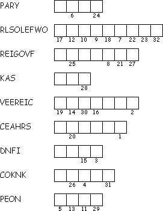

This Week: Hosea 1:2-10 and Psalm 85 or Genesis 18:20-32 and Psalm 138, Colossians 2:6-15, (16-19), Luke 11:1-13
Elementary School Pew-work
Use these words to fill in the blanks: receive searches Father asked hungry knocks gifts
Everyone who asks will __________ , everyone who __________ will find, and the door will be opened for everyone who __________ . Which one of you fathers would give your __________ child a snake if the child asked for a fish? Which one of you would give your child a scorpion if the child __________ for an egg? As bad as you are, you still know how to give good __________ to your children. But your heavenly __________ is even more ready to give the Holy Spirit to anyone who asks.
|
1. What happens to us when we ask God for things? _____________________________________ 2. How does God love us? _____________________________________ 3. What concerns do we take to God in prayer? _____________________________________ |
 |
|
|
|
Next week: Hosea 11:1-11 and Psalm 107:1-9, 43 or Ecclesiastes 1:2, 12-14; 2:18-23 and Psalm 49:1-12 Colossians 3:1-11 Luke 12:13-21